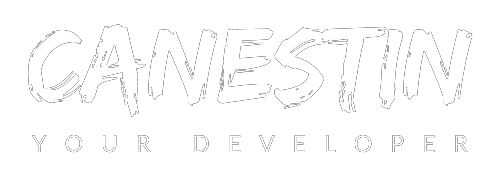
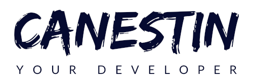

x




Projet personnel. Plateforme pemettant de jouer aux échecs en ligne, avec messagerie interne. Développé en JavaScript, mise en place de la connectivité réseau en NodeJS, Socket.io.
Projet académique de groupe. Site web permettant aux parents d'avoir en temps réel l'évolution des données physiologiques de leur bébé; collectées par des capteurs via la passerelle ISEP.
Projet personnel, qui prit son inspiration à partir d'un cadeau, une oeuvre aux couleurs chaudes et vives qui a su me toucher et que j'immortalise à travers ce site. Merci Nour et Tasnim !
Projet académique. Programme Java permettant de jouer au jeu de Yokai (jeu coopératif de 2, 3, 4 joueurs dont l'objectif est de réunir toutes les familles de cartes, faces cachées) en mode console.